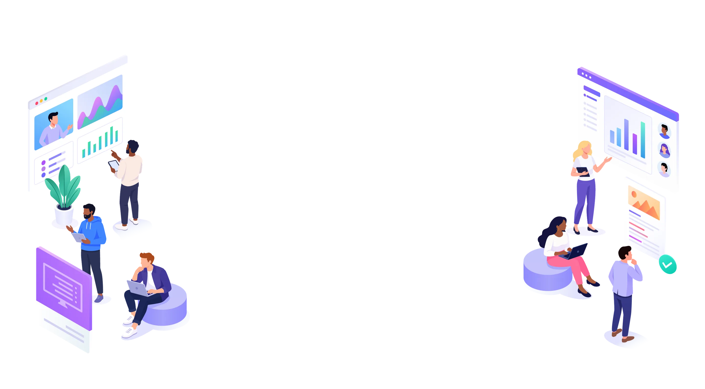
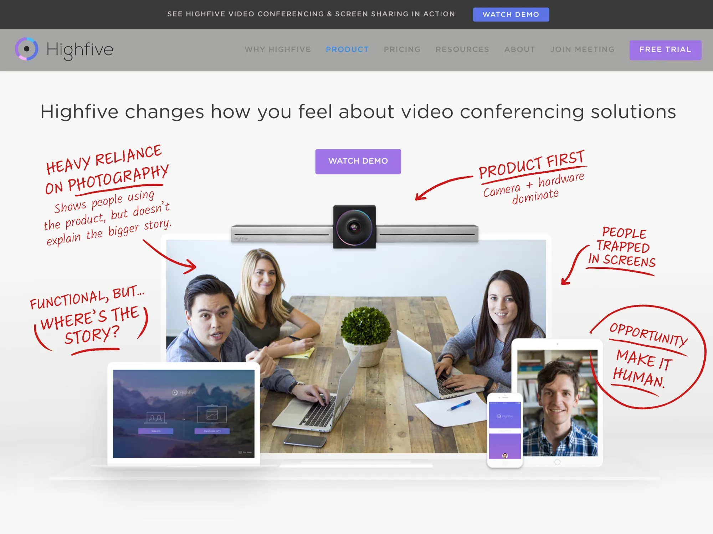
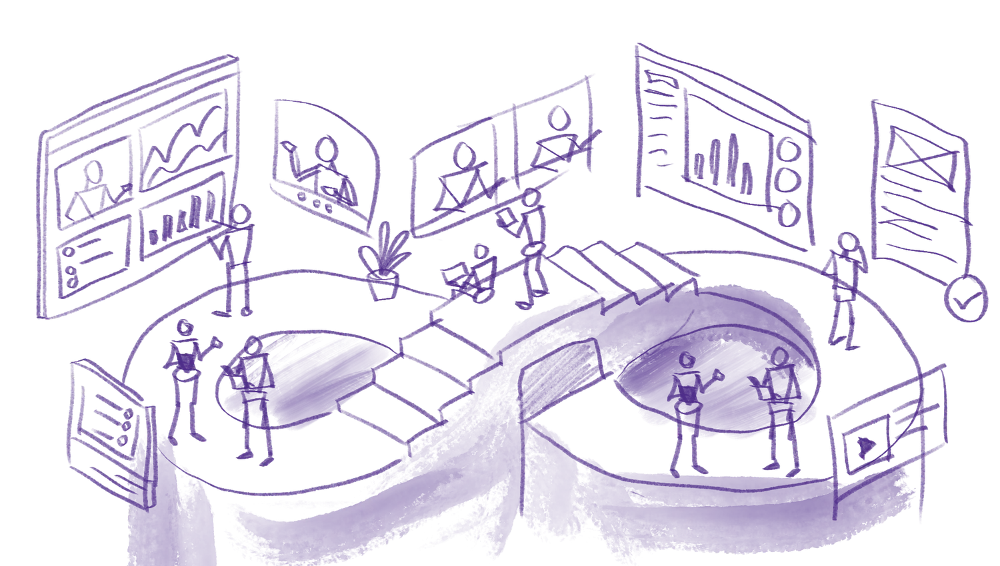
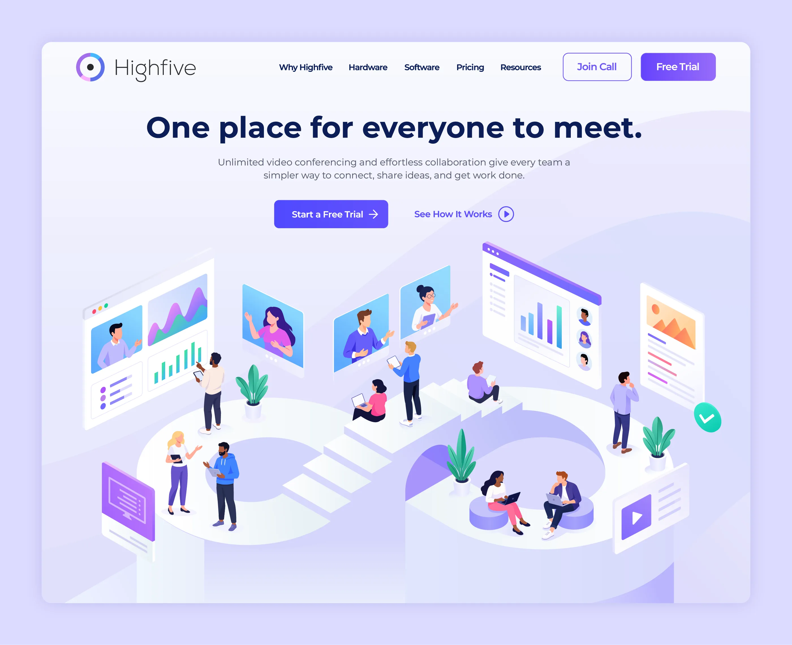

Challenge
Highfive was looking for a refresh to stand out in the competitive video conferencing landscape. That meant a more expressive way to show how its products bring people together, beyond traditional product photography.

Highfive is a SaaS company that makes video conferencing products. As Brand Designer and Illustrator, I created the illustration system behind its website refresh.
The illustrations appeared across the homepage, How-It-Works and feature pages, giving the brand a more human face.
Highfive was looking for a refresh to stand out in the competitive video conferencing landscape. That meant a more expressive way to show how its products bring people together, beyond traditional product photography.
A flexible illustration system built with the marketing team and art director, turning product benefits into approachable visual stories. The team felt its original grey and purple look was limited and a little flat, so we moved to the more colorful palette from its brand.
Products and features that feel more approachable, more visual, and distinctly Highfive. The visuals were used across the web and social.
Design Challenge
Highfive’s website relied heavily on photography of people using its video conferencing hardware. While the imagery showed the product in context, it was harder to communicate the bigger story: how Highfive connected people, rooms, devices, and ideas.
The team saw an opportunity to use illustration to explain those experiences in a way photography couldn’t—and create a more distinctive visual presence in an increasingly crowded video conferencing market.
Before

The Approach
Working closely with Highfive’s marketing team and art director, I explored concepts that translated product benefits into approachable visual narratives.
Instead of simply illustrating people on video calls, I focused on the broader experience around the product: unlimited team collaboration, conversations moving between devices, information being shared, and people connecting across locations.
The goal was to evolve Highfive’s existing visual identity without losing what made the brand approachable, simple, and human.

Color & Gradients
The system starts with a limited core palette: four hues and a teal accent. From there it expands into color gradients derived from those core colors, giving each scene depth and movement while keeping it unmistakably Highfive.

Product Storytelling
Video conferencing is ultimately about something you can’t easily photograph: connection.
Illustration gave us a way to visualize those invisible moments.
A meeting could become a network of people and screens. International collaboration could become a connected map. Software features could live alongside the people using them. Plans and product capabilities could become approachable visual concepts instead of another wall of technical copy.
This allowed the website to communicate both what Highfive did and what using Highfive felt like.


Product Storytelling
The illustration system was designed to adapt across different parts of the customer journey—from broad brand storytelling to specific product and feature messaging.
Hero illustrations introduced the overall Highfive experience, while smaller scenes and supporting graphics helped explain collaboration, meetings, devices, international connectivity, software capabilities, and pricing.
Rather than treating each illustration as a standalone piece, I approached them as parts of one visual ecosystem.

Takeaways
Moving from a limited grey and purple look to a full, colorful palette gave the brand far more range to work with.
Illustration explained how Highfive connects people, devices and ideas in a way product photography couldn’t.
Up Next